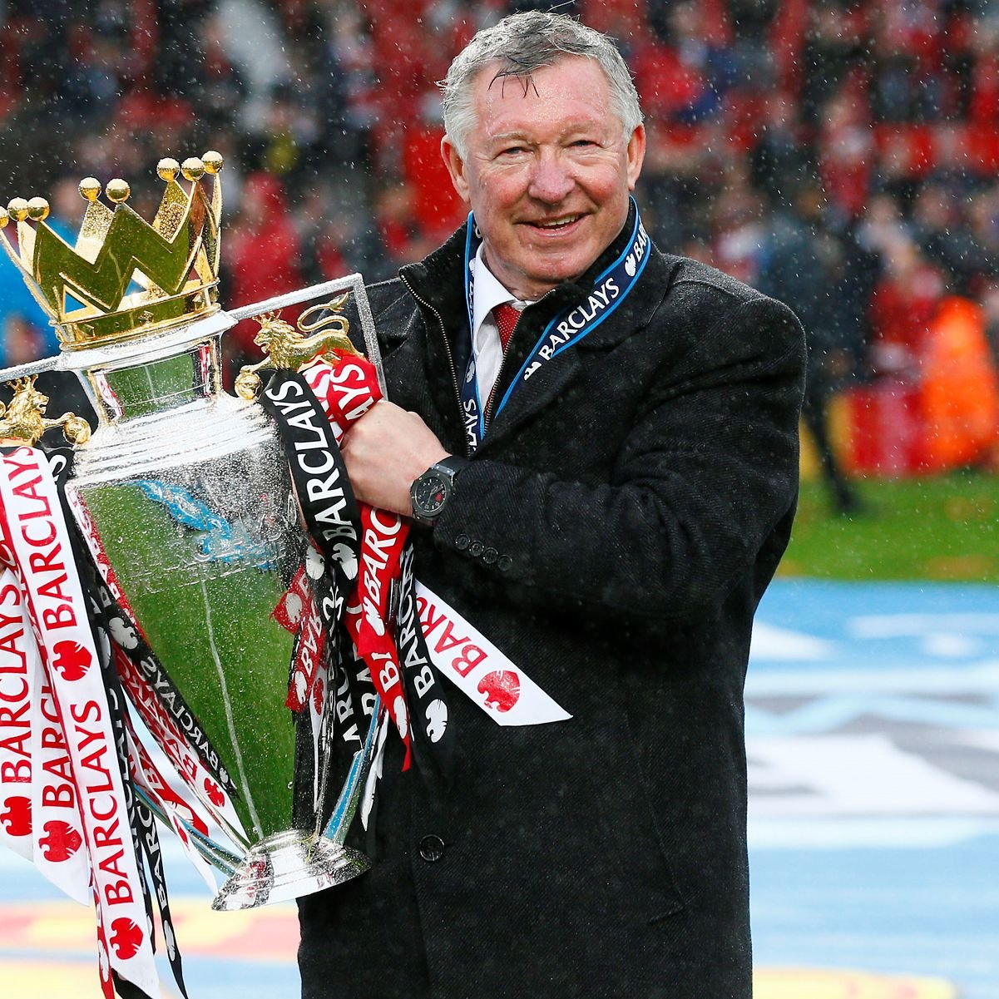
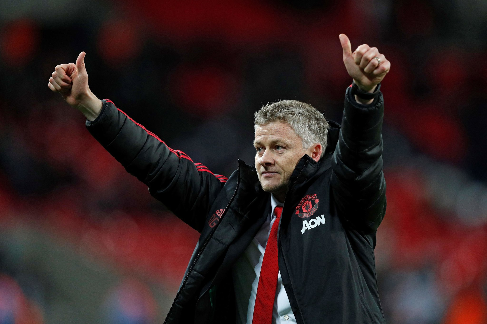
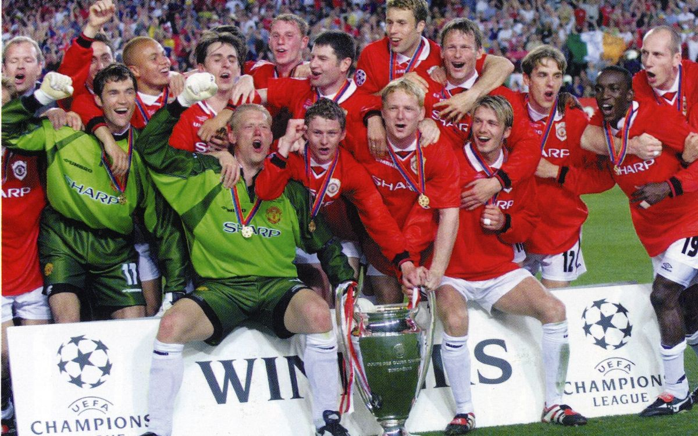

<html></html>
<head>
<link rel="stylesheet" type="text/css" href="ok.css">

<title>History</title>
<body>
	<ul>
  <li><a  href="man u.html">Home</a></li>
  <li><a class="active" href="man u 2.html">History</a></li>
  <li><a href="legends.html">Legends</a></li>
  <li><a href="squad.html">Squad</a></li>
  <li><a href="matches.html">Greatest Matches</a></li>
</ul>
<br>

<!-- This is my first Heading -->
<h1> History Of Manchester United </h1>
<p><b>Manchester United is a football club that is based in Old Trafford, Greater Manchester. The team competes in the Premier league, which is the top flight of English football. Manchester United are also nicknamed the Red devils. United's home stadium is Old Trafford and they shifted to this stadium in 1910. Manchester United have one more trophies than any other team that plays in England. Manchester United is one of the most widely supported teams in the world. In 2016-17 United was the highest earning team in the world with an annual revenue of 676.3 million euros. They were also the third most valuable team in the world in 2019, valued at 3.15 billion euros. The Glazer family has the major ownership and control over the team after being purchased by Malcom Glazer for 800 million euros in 2005.Manchester United are the biggest and most accomplished team in english football and one of the most accomplished worldwide. As mentioned in the introduction they have won more trophies than any other team in english football. They have won a record 20 league titles, 12 fa cups, 5 league cups, and a record 21 community shields. They have also won 3 UEFA champions leagues, 1 UEFA europa league, one UEFA cup winners cup,one intercontinental cup and one club world cup. In the 1989-99 season they became the first english team in football history to win the continental european treble and by winning the UEFA europa league in  20016-17 they became one of five teams to have won all 3 main european competitions. In January 1902, with debts of £2,670 – equivalent to £290,000 in 2021[nb 1] – the club was served with a winding-up order.[18] Captain Harry Stafford found four local businessmen, including John Henry Davies (who became club president), each willing to invest £500 in return for a direct interest in running the club and who subsequently changed the name;[19] on 24 April 1902, Manchester United was officially born.[20][nb 2] Under Ernest Mangnall, who assumed managerial duties in 1903, the team finished as Second Division runners-up in 1906 and secured promotion to the First Division, which they won in 1908 – the club's first league title.The following season began with victory in the first ever Charity Shield[21] and ended with the club's first FA Cup title. Manchester United won the First Division for the second time in 1911, but at the end of the following season, Mangnall left the club to join Manchester City.[22]In 1922, three years after the resumption of football following the First World War, the club was relegated to the Second Division, where it remained until regaining promotion in 1925. Relegated again in 1931, Manchester United became a yo-yo club, achieving its all-time lowest position of 20th place in the Second Division in 1934. Following the death of principal benefactor John Henry Davies in October 1927, the club's finances deteriorated to the extent that Manchester United would likely have gone bankrupt had it not been for James W. Gibson, who, in December 1931, invested £2,000 and assumed control of the club.[23] In the 1938–39 season, the last year of football before the Second World War, the club finished 14th in the First Division.</b>
</p>

<br>
<a href="https://ir.manutd.com/company-information/history.aspx">Read Here in Detail, Man Uniteds History</a>

<h1><i>Sir Matt Busby Days</i></h1>
<p>n October 1945, the impending resumption of football led to the managerial appointment of Matt Busby, who demanded an unprecedented level of control over team selection, player transfers and training sessions.[24] Busby led the team to second-place league finishes in 1947, 1948 and 1949, and to FA Cup victory in 1948. In 1952, the club won the First Division, its first league title for 41 years.[25] They then won back-to-back league titles in 1956 and 1957; the squad, who had an average age of 22, were nicknamed "the Busby Babes" by the media, a testament to Busby's faith in his youth players.[26] In 1957, Manchester United became the first English team to compete in the European Cup, despite objections from The Football League, who had denied Chelsea the same opportunity the previous season.[27] En route to the semi-final, which they lost to Real Madrid, the team recorded a 10–0 victory over Belgian champions Anderlecht, which remains the club's biggest victory on record.The following season, on the way home from a European Cup quarter-final victory against Red Star Belgrade, the aircraft carrying the Manchester United players, officials and journalists crashed while attempting to take off after refuelling in Munich, Germany. The Munich air disaster of 6 February 1958 claimed 23 lives, including those of eight players – Geoff Bent, Roger Byrne, Eddie Colman, Duncan Edwards, Mark Jones, David Pegg, Tommy Taylor and Billy Whelan – and injured several more.ssistant manager Jimmy Murphy took over as manager while Busby recovered from his injuries and the club's makeshift side reached the FA Cup final, which they lost to Bolton Wanderers. In recognition of the team's tragedy, UEFA invited the club to compete in the 1958–59 European Cup alongside eventual League champions Wolverhampton Wanderers. Despite approval from The Football Association, The Football League determined that the club should not enter the competition, since it had not qualified.[31][32] Busby rebuilt the team through the 1960s by signing players such as Denis Law and Pat Crerand, who combined with the next generation of youth players – including George Best – to win the FA Cup in 1963. The following season, they finished second in the league, then won the title in 1965 and 1967. In 1968, Manchester United became the first English (and second British) club to win the European Cup, beating Benfica 4–1 in the final[33] with a team that contained three European Footballers of the Year: Bobby Charlton, Denis Law and George Best.[34] They then represented Europe in the 1968 Intercontinental Cup against Estudiantes of Argentina, but lost the tie after losing the first leg in Buenos Aires, before a 1–1 draw at Old Trafford three weeks later. Busby resigned as manager in 1969 before being replaced by the reserve team coach, former Manchester United player Wilf McGuinness.[35]</p>

<br>
<a href="https://www.britannica.com/biography/Matthew-Busby">About Matt Busby</a>

<h1>Sir Alex Ferguson</h1>
<p>Alex Ferguson and his assistant Archie Knox arrived from Aberdeen on the day of Atkinson's dismissal,[41] and guided the club to an 11th-place finish in the league.[42] Despite a second-place finish in 1987–88, the club was back in 11th place the following season.[43] Reportedly on the verge of being dismissed, victory over Crystal Palace in the 1990 FA Cup Final replay (after a 3–3 draw) saved Ferguson's career.[44][45] The following season, Manchester United claimed their first UEFA Cup Winners' Cup title. That triumph allowed the club to compete in the European Super Cup for the very first time, where United beat European Cup holders Red Star Belgrade 1–0 in the final at Old Trafford. A second consecutive League Cup final appearance in 1992 saw the club win that competition for the first time as well, following a 1–0 win against Nottingham Forest at Wembley Stadium.[40] In 1993, the club won its first league title since 1967, and a year later, for the first time since 1957, it won a second consecutive title – alongside the FA Cup – to complete the first "Double" in the club's history.[40] United then became the first English club to do the Double twice when they won both competitions again in 1995–96,[46] before retaining the league title once more in 1996–97 with a game to spare. In the 1998–99 season, Manchester United became the first team to win the Premier League, FA Cup and UEFA Champions League – "The Treble" – in the same season.[48] Losing 1–0 going into injury time in the 1999 UEFA Champions League Final, Teddy Sheringham and Ole Gunnar Solskjær scored late goals to claim a dramatic victory over Bayern Munich, in what is considered one of the greatest comebacks of all time.[49] The club then became the only British team to ever win the Intercontinental Cup after beating Palmeiras 1–0 in Tokyo.[50] Ferguson was subsequently knighted for his services to football. Manchester United won the league again in the 1999–2000 and 2000–01 seasons, becoming only the fourth club to win the English title three times in a row. The team finished third in 2001–02, before regaining the title in 2002–03.[53] They won the 2003–04 FA Cup, beating Millwall 3–0 in the final at the Millennium Stadium in Cardiff to lift the trophy for a record 11th time.[54] In the 2005–06 season, Manchester United failed to qualify for the knockout phase of the UEFA Champions League for the first time in over a decade,[55] but recovered to secure a second-place league finish and victory over Wigan Athletic in the 2006 Football League Cup Final. The club regained the Premier League in the 2006–07 season, before completing the European double in 2007–08 with a 6–5 penalty shoot-out victory over Chelsea in the 2008 UEFA Champions League Final in Moscow to go with their 17th English league title. Ryan Giggs made a record 759th appearance for the club in that game, overtaking previous record holder Bobby Charlton.[56] In December 2008, the club became the first British team to win the FIFA Club World Cup and followed this with the 2008–09 Football League Cup, and its third successive Premier League title.[57][58] That summer, forward Cristiano Ronaldo was sold to Real Madrid for a world record £80 million.[59] In 2010, Manchester United defeated Aston Villa 2–1 at Wembley to retain the League Cup, its first successful defence of a knockout cup competition.[60]After finishing as runner-up to Chelsea in the 2009–10 season, United achieved a record 19th league title in 2010–11, securing the championship with a 1–1 away draw against Blackburn Rovers on 14 May 2011.[61] This was extended to 20 league titles in 2012–13, securing the championship with a 3–0 home win against Aston Villa on 22 April 2013.[62] </p>

<br>
<a href="https://en.wikipedia.org/wiki/Alex_Ferguson">Everything About Sir Alex</a>

<h1> >Situation After Ferguson</del></h1>
<p><q>Manchester United has struggled to find a stable manager since the retirement of Sir Alex Fergusson.  The team played 1500 matches under him between 1986-2013.  However, they have experimented with 5 managers since then but havent found a stable solution yet.  David Moyes, who succeeded Sir Alex lasted only one season.  Ryan Giggs was a caretaker manager for a few matches and made way for Louis Vaan Gaal from Netherlands, who was the coach for two seasons but the results were not satisfactory. Manchester United hired Jose Mourinho, a celebrated Potuguese manager in 2016.  Even he had to leave in the middle of his third season due to poor results.  Then came the current manager, Ole Gunnar Solskjaer.  He has now been with the team for more than two seasons and the results have improved. They finished 3rd in the 2019/20 season behind Liverpool and Manchester City and finished second in the 2020/21 season.</q>
</p>

<br>
<a target="blank" href="https://www.manutd.com/en/players-and-staff/detail/solskjaer">Ole Gunnar Solskjaers Player and Manager Profile</a>

<br>
<h1> <mark>1999 Munich Comeback</mark></h1>
<a target="blank" href="https://en.wikipedia.org/wiki/1999_UEFA_Champions_League_Final">View here the details of the 1999 Champions League</a>
<p>Manchester United are very well known for their huge comebacks. They have had many famous comebacks over the years, including a 3-3 draw against Chelsea in 2011/2012, 1999 3-2 win over Juventus,4-2 vs West ham and many more. But perhaps, Man Uniteds greatest comeback, was over Bayern in the 1999/2000 Champions league Final. They were 1-0 down until the 90th minute when Teddy Sherringham struck back. In what was only a dream until 5 minutes back, current Man United manager Ole Gunnar Solskjaer scored a winner making it 2-1 in the 92nd minute, winning the Champions league title. This was a remarkable match, as it won them not only the Champions League as well as the terble.</p>

<br>
<br>
<a target="blank" style="font-size: 25px" href="https://www.manutd.com/">Click here to view the official Manchester United Website</a>

</body>

</head>